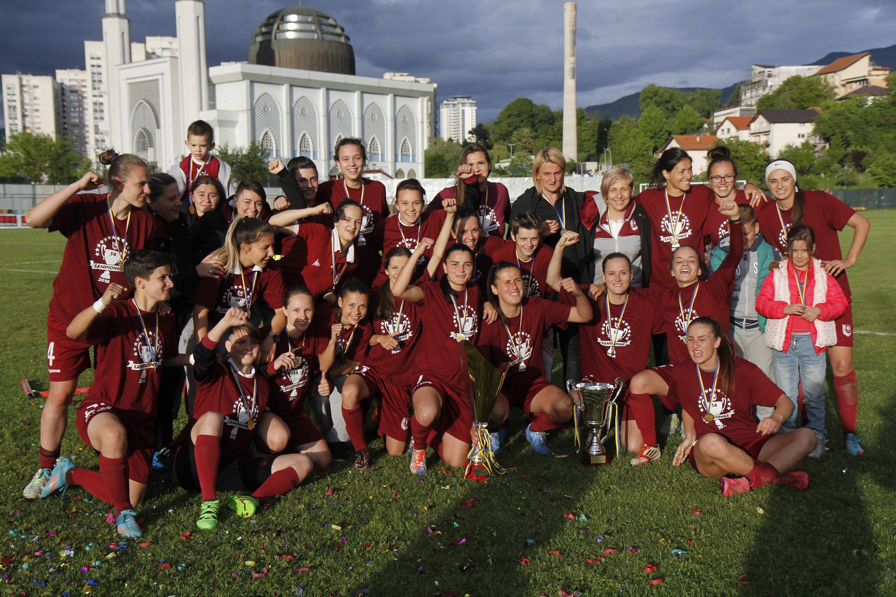
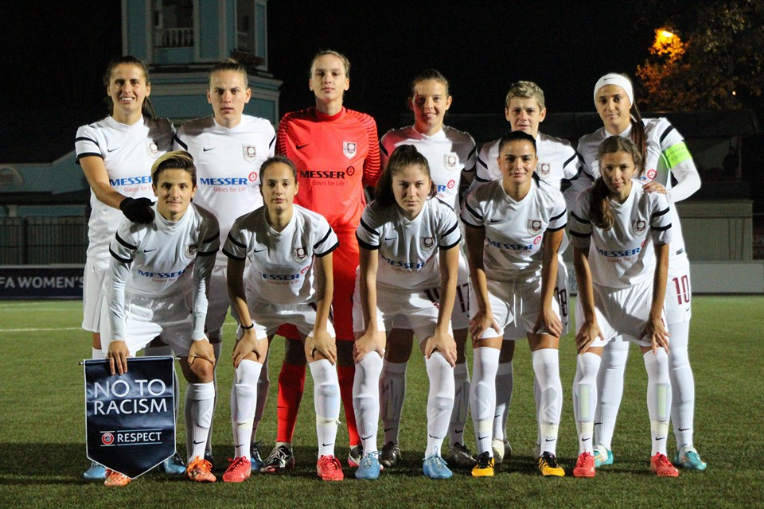
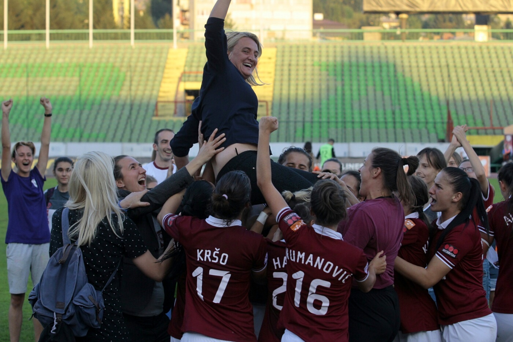
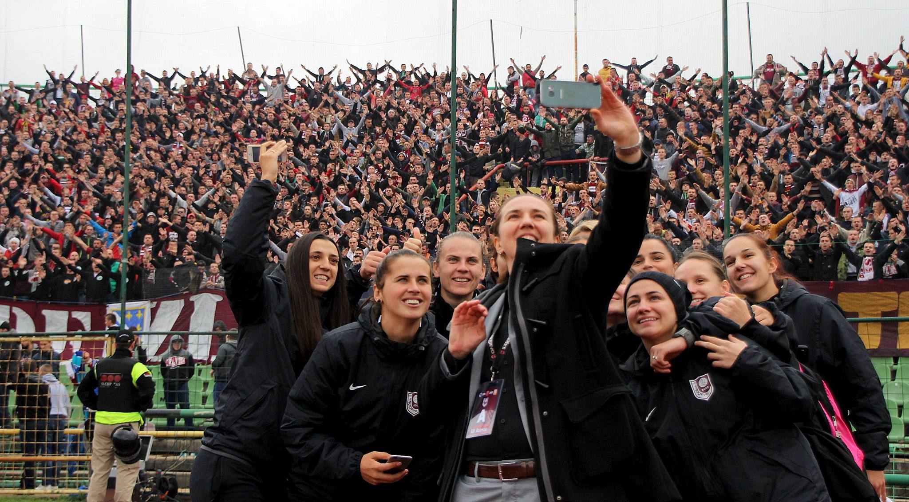

Past results
SFK 2000 Sarajevo are winners of PL
for the last 16 years and winners of Cup for the last 14 years.

Winner of all international futsal tournaments in the Region

Their biggest achievement is qualifying into 1/16 final in Women's Championship League

This year on Sarajevo's derby, players from SFK 2000 Sarajevo were welcomed by F.K. Sarajevo's fans
"Horde Zla" after being eliminated from the 1/16 of WCL
